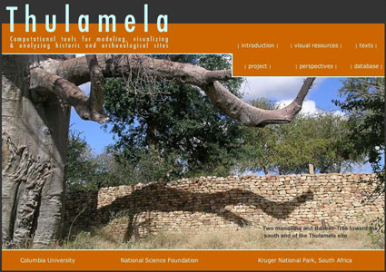

1000 DAYS OF THEORY
Nature, Heritage and Spatial Technologies of Fear
Uncanny Experiences in Kruger National Park
James Conlon
1.3 million tourists visited South Africa's Kruger National Park in 2004. For many the trip marked their first, and perhaps only, excursion into an African wilderness. But like other game reserves and national parks, human intervention has both altered and sustained the Kruger's landscape just as the forces of nature have. This unnaturalness may come as a surprise to many, or perhaps the visitor accepts these human interventions in passing while taking pleasure in consuming heritage. The affluent traveler has likely been groomed for his or her visit by an extensive menu of dramatic, televised nature long before the trip was even booked. A cultural memory that has romanticized untouched nature augments the position, as does the public debate over the precarious fate of the wild. From this historical and cultural position, we read such heritage spaces as safely outside of our increasingly urban, global society. The Kruger emerges as one of the few places on earth where the affluent eye may consume the "Big Five" -- lions, rhinos, leopards, buffalo, elephants, and giraffes -- live in their pristine natural environment, safe from the hand of man. As pleasurable as this fantasy may be, it never seems completely secure. Whether falling prey to a pickpocket, having one's rental car-jacked, or simply paying too much for that souvenir, the threat of victimization seems to be the mandatory trade-off for touristic pleasures. We may then say the efficacy of conservation strategies, obviously a crucial contemporary issue, is not the lone question concerning the formation of heritage space [1]. Examination of a spatial order that feeds off and reproduces pleasure and fear is crucial as well. Our anxieties are not rooted in the dread of loosing precious ecological diversity alone, nor is our pleasure. We must also define this fear as anxiety over the interruption of the touristic fantasy and the potential revelation of the real violence inherent in its construction.
The emerging global milieu is more and more designed for optimal consumption, peopled by those with direct access to a consumer lifestyle and those left out. Zygmunt Bauman has articulated the situation through two opposing personae. To paraphrase, if the world is increasingly populated by "tourists," the number of "vagabonds," those excluded from fantastic consumer experiences, is growing at an even faster rate. The tourist not only seeks out the most desirable goods -- he is a collector of sensations, accumulating brief, intense experiences only to move on to the next attraction. The vagabond is hard-pressed to pursue any desires at all. Even though mass media regularly presents the touristic pursuit of sensations around the globe, he remains trapped in stifling urban ghettos or weighed down by stark rural poverty. Whether through cheap tour packages or virtual environments, space is becoming less and less an obstacle to the tourist. The vagabond, on the other hand, is tightly bound to his position. He is trapped behind boundaries of class divisions, racial segregation and xenophobic restrictions on the movement of people. The vagabond only "travels" through catastrophic shifts in the social order or by entering a growing underworld of human trafficking [2].
In order for the tourist to enjoy the spectacle of the wild, he must assume our protected natural resources have been taken out of the high-stakes game of global exchange and speculation, forevermore out of human context as a simulation of their state in some primordial past. Never mind the fact that human cultures have played an integral role in places like the Kruger for centuries -- there are literally thousands of cultural sites within the boundaries of the Park that are now being reevaluated, while human engineering has altered the face of the nature reserve [3]. It is more the fact that the big business of tourism and a kind of psychological patina of consumerist culture have re-focused our gaze upon the wild. The touristic experience of nature then is more and more a consumer experience. Thoreau's solitude, a mysterious setting for contemplation, is being fast replaced by the slow motion chase scene -- predator versus prey. We hope to re-experience this cinematography through the window of the rental car as we speed from one lodge to another. What is more, you do not have to find yourself at an exclusive resort or faraway locale to come across the tourist. You have likely encountered one locally, for the global affluent are more and more tourists in their own homes and neighborhoods. The tourist's goal is access to experiences, and in turn the possibility of a lifestyle as faithful as possible to the glossy image in the brochure or the thrilling scene on the screen. He is insatiable. In the case of the nature experience, the growing urgency of the global conservancy project only increases the value of cinematic nature, reinforcing its position as a space in need of our protection within the complex web of risk calculation and management that defines contemporary society [4].
We must flesh out Bauman's oppositional persona to deconstruct the touristic fantasy, and this cannot be performed without positioning the vagabond within the wilderness. In the Kruger, unlike the tourist in the car, the vagabond is alone on foot in the bush, something strictly forbidden by the rules. He is not a native San, like the more iconic Maasai guide of our documentaries and ethnographic museums. The vagabond is not reminiscent of the flute player from Rousseau's "The Dream," nor does he have the official status of park ranger or even the comforting social affluence of another visitor. He is a black African, and as we are working through personae, we may write him as a character similar to Coetzee's Michael K [5]. The vagabond can only be a transgressor in this narrative, at best a refugee, out of place within the tourist's fantastic vista. When encountered out of context in this way, the tourist must frankly weigh this interloper's potential threat to wildlife and visitor alike. In fact, this position is ironically reinforced by Bauman's choice of the term vagabond, implying someone in a permanent position of being out of place.
The tourist and the vagabond are personae: outward images of character an author or individual presents to the world, a kind of façade, but one that strives to represent an inner truth. The term comes from the Latin word for 'mask,' and while one may create a persona to hide intentions, it may function as a type of catalyst spurring more refined discussion. Even a brief, critical history and examination of lived social spaces may give more depth to Bauman's vagabond persona. To come across such a person in Kruger is not pure fantasy, after all, as I myself may attest. While working to document a cultural site in the far north of Kruger National Park, a small group of colleagues and myself came across two men making great haste to separate themselves from our sanctioned presence in the wilderness. As a ranger explained, they were most likely guides making their way back to Mozambique, the equivalent of the coyotes who lead "illegals" across the Mexican border into the US. Such scenes of transgression are not common in the Kruger, but they do happen. It is a clear matter. The prospects for work remain for the most part better in South Africa than Mozambique, so people will make the dangerous trek across the border and on through the Park hoping to move on to a paycheck. Consequently the Mozambicans are not aimless wanderers, as the term "vagabond" implies. They had made a calculated decision and are social agents in a global milieu just as the tourist is, disadvantaged as the former may be. Nor is this by any means a simple choice for them. Like their counterparts crossing the US-Mexican frontier and in other parts of the world, they take tremendous risks to life and limb. Returning to the comparison to Michael K drives this point home. Despite his rich inner voice, the protagonist of Coetzee's novel remains silent throughout most of the work: he is even introduced to the reader in the first sentence of the novel through a deformity of the mouth, his cleft lip, marking his silence. Nor does he have the legal documentation that would speak for him in this social context as a legal surrogate. As Michael K is interrogated time and time again, his silence becomes his only strategy to gain refuge from the authorities, and ironically also an additional cause for their suspicion. But despite his silence, he has agency and clear objectives at the opening of the narrative. He buys into the pastoral ideal of his ancestral home to better his mother's condition, abandons his job, and takes the calculated risk of abandoning the riot-torn city. The tribulations of the journey may further silence Michael K and make a vagabond out of him, but he did not begin his trek in quite this condition. The lesson for Michael K is that the pastoral no longer exists amid the civil war, only a harsh landscaped of abandoned farms and prison camps. So like Michael K, the Mozambicans are silenced and forced to surrender their agency by a particular socio-historical narrative and spatial technology. The vagabond persona then grows increasingly problematic and detached from reality -- is there any need to maintain Bauman's vagabond/tourist antitheses for the sake of his rhetorical scheme? The vagabond is simply the global "downtrodden." It is upon the backs of these subalterns that the global tourist travels, consumes, and enjoys. As Bauman himself puts it, his vagabonds and tourists are both essentially consumers, one in the same. But our global downtrodden are damaged consumers because their potential is limited by their lack of resources [6]. In a turn of Gramsci's phrasing, in the global milieu, every man is a tourist, but not every man functions as a tourist in society.
The second point to keep in mind concerns the nature of the Mozambicans' transgression. It is not simply one of illegal border crossings: it violates the touristic fantasies spaces like the Kruger engender. So-called illegals and refugees occupy another compartment of the contemporary imagination, and their appearance in the park causes the sanctioned visitor to drift to a much more disturbing spatial pole signaling criminality. They take the tourist to the gated suburbs, fortress-like shopping malls, and razor-wired villas of Johannesburg. These demarcated, urban spaces of privilege, the fixed points where the favored eye consumes luxury goods while locking out black poverty, articulate the divisions still prevalent in South African society. Equally important to the spatial grid of power are the highways lifting the affluent over stretches of urban poverty. Several instances of spectacular highway robberies marked Johannesburg's summer of 2005, giving rise to public insecurities. South Africa's rates of carjackings, murders, and armored-car attacks have actually fallen dramatically since the 1990s. Violent crime in general has fallen as well, with the national murder rate dropping by 40 percent since 1995. Nonetheless surveys taken in 1998 and 2004 indicate that the public's perception of its own safety has worsened by nearly 100 percent [7]. Touristic consumers are simply trained to be wary of interlopers, especially within these urban spatial contexts. They certainly do not expect an interloper in the Kruger. The uncanny nature of such an experience leads one back to our well-rehearsed, urban anxieties. It signals a momentary confluence of the real and imaginary. Natural heritage and urban space may not be polar opposites. The irony is, of course, Mozambicans crossing into South Africa are likely more threatened by the difficulties of the crossing and potential apprehension than the tourist is by them.
The appearance the downtrodden makes explicit the common ground between this natural space and its urban counterparts well beyond South Africa. The interruption underscores the divisions within the global consumerist milieu and the spatial technologies that enforce its logic. Much progress has been made since Apartheid was abolished, and we must certainly acknowledge these gains. Nor would it be fair to gloss over the efforts of Kruger National Park to reach out to the greater public [8]. But institutions of oppression are well entrenched, and there is a long history to overcome [9]. Upon leaving the Park and driving through the adjacent areas of extreme rural, black poverty, reform seems slow to come and progress bittersweet. Perhaps most unsettling to the American visitor like myself, the elements of spatial exclusion in South Africa -- closed suburbs, elite housing, guarded shopping malls, freeways and national parks -- are those of our own architectural and planning idiom. In this way it signals the normalization of these spatial technologies in locales around the globe. It is no wonder the Mozambican transgressors of spaces such as Kruger Park find immediate parallels in the coyotes who lead "illegals" into the United States: both are crossing similar social spaces and the legacy of racist segregation.
Continue on further from the interplay of personae into the political history of conservation in South Africa. The highly aestheticized and moralistic language of nature and heritage conservancy traditionally leads inquiry away from social and political considerations, but much baggage remains for us to unpack. Aesthetic and moral perspectives have histories and deep ideological foundations, as Eagleton has written, an essential element in constructing a modern European subjectivity [10]. More than one critic [11] has interrogated the assumption that game reserves and national parks, the Kruger in particular, are neutral, extra-social space -- a South African Eden, as one author has put it [12]. Jane Carruthers' account of the social and political history of the Park revisits the often-presumed neutrality of the conservancy project [13]. Rooted in the nineteenth-century expansion of primarily Dutch settlers into the Transvaal region, extending governmental control through the establishment of game reserves was an effective geopolitical strategy. Contentions between the British Cape Colony and the Afrikaner Transvaal Republic played themselves out along side, and even hid behind, the drive to safeguard wildlife: the formation of game reserves having real strategic and political objectives prior to the outbreak of war between these two parties. Even as late as the 1920s, when the Sabi and Shingwedzi game reserves were being consolidated into what would become Kruger Park, Jan Smuts expressed the hope that the establishment of a National Park would extend the Union well into Central Africa [14]. What is more, the establishment of national parks and monuments was a mark of civilization, the accoutrement of any progressive nation whether in Europe, North America, or Africa [15]. There is certainly something to be said for understanding the park as a technology of geopolitical interests and the manifestation of ideology.

http://www.learn.columbia.edu/thulamela
The establishment of Kruger Park also had a role within white South Africans' attempts to control black African labor: the Kruger was used very much as a spatial technology of socio-economic coercion. It was commonly assumed that hunting game was a sign of laziness and indolence in Africans. This is in part due to Victorian attitudes towards hunting -- sport hunting was deemed honorable, but hunting for food and other household needs allowed Africans to avoid participating in mining, agricultural, and the other industries essential to South Africa's development. Parks also forced the relocation of black Africans to areas where hunting and agriculture were simply unfeasible. Such relocations and limitations, even when it was apparent that African substance hunting had minor impact on wildlife, had very real economic incentives in forcing Africans into the larger labor market. In an uncanny echo to my experiences, it was not uncommon in the first half of the twentieth century for Mozambicans to trespass into the Kruger and get caught on purpose: they would gladly exchange several weeks' worth of forced labor in the Park, their punishment, for the pass they would subsequently receive to go on and work in the mines [16]. There is of course a history of nature conservation that we must valorize in the face of increasing environmental degradation. As an architectural conservator, I find inspiring parallels between efforts to safeguard ecological diversity and that of the built environment. It is a pursuit I believe in. But too often these attendant political narratives of coercion and domination have been effaced from history. Their protagonists have been rendered silent, much like Michael K.
The developing spatial dynamic appears to control subaltern subjects through separation. Authors such as Edward Soja and Michael Davis, both sharing a common intellectual genealogy back to the spatialized Marxism of Henri Lefebvre, have contributed to our critical understanding of such spaces within the disciplines of geography, planning and historiography [17]. Their critical work goes one step further than the inside/outside dynamic to shed light onto the agency of space in the cultural milieu. As Lefebvre might have put it, a heritage space is never only a result of the actions of political and social superstructures, but simultaneously a product of and precondition to these forces [18]. Lived experiences in turn apply pressure to this spatial process and expose the mechanisms of coercion. In the case of the Kruger, instances of transgression make explicit the tourist's own transgressive nature. While civilization must be locked out of the park, "nature" looses its value in the system of consumption if the affluent cannot enter, even if tourist consumption places great pressures on the Park's continued sustainability. The conservator of cultural heritage must face this conundrum as well: the very intrusion of the tourist threatens the authenticity of the native heritage of such interest to the tourist gaze. But in a world that demands progress and change, the logic of touristic consumption is perhaps one of the few remaining strategies available to those bent on the illusion of maintaining authenticity. This is the point where lived experiences may turn back on neatly produced space to undermine our assumptions, although these processes are difficult to disrupt. It is perhaps the tension of this geography of transgression and risk that titillates the contemporary tourist well beyond the more accepted narratives of self-improvement and escapism, and may even reinforce the great power the tourist wields as the final arbiter of space. As these Mozambicans are not a part of one's vision of the park, they quickly take on the crucial function of the Other, the object upon which we displace our own transgressive desires. The added threat of social violence is all too easy to reference. Nevertheless, to acknowledge this act of displacement further deconstructs the fallacy of pristine wildness as a place beyond culture. Likewise, it underscores the politics embedded in these spaces
Bauman's work may again help flesh out the points of tension evident in the touristic experience. From this historical-ideological perspective, the Kruger may be immediately understood as what Bauman defines as "emic space" [19]. Bauman translates Lévi-Strauss' categories of the anthropoemic and the anthropophagic, two strategies by which we neutralized the unfamiliar, into emic space and phagic space to explain contemporary 'public but non-civil' zones:
...forms of the 'emic' strategy are spatial separation, urban ghettos, selective access to spaces and selective barring from using them. The second strategy [the phagic] consists in a soi-distant 'disalienation' of alien substances...if the first strategy was aimed at the exile or annihilation of the others, the second was aimed at the suspension or annihilation of their otherness [20].
These spaces render unneeded the skills of civility necessary for constructively engaging different individuals and positions -- Bauman goes as far as to contend they all but eliminate the possibility of such interactions [21]. The South African and American spaces I have outlined above are predominantly emic, spatial technologies employed to segregate the Other. We may add depth to Bauman's system through the context of Kruger National Park. As Bunn has noted, the Park had a role in the colonial period in spatializing older customary laws, on the one hand, and new forms of rights-bearing individualism, on the other. Space then becomes a narrative of managing these problems, working anthropoemically on both literal and mental levels [22]. Phagic space engulfs and consumes otherness, recruiting and incorporating into its own logic rather than physically excluding. The phagic space consumes, transforms, and ultimately annihilates. Bauman's example of such a space is the shopping mall, where all difference is engulfed within consumerist desire. The immediate parallel in Kruger National Park is the ubiquitous collection of gift shops one finds scattered across the park. Not only do visitors from every corner of the globe consume as equals here; traditional African cultures and nature are rendered intelligible as commodofied trinkets.
In the Kruger these two distinct types of spaces overlap, interconnect and support one another underscoring the transformations taking place in contemporary South Africa. Take this logic further, though, and contradictions seem inevitable. The Kruger may be understood as a spatial technology of exclusion, but if nature, heritage, and culture are to be consumed to the fullest extent, this space must be gradually opened. Here the destructive logic of capital turns on its own technologies, with the paradigm of racial purity and national culture held in limbo in the pursuit of more and more consumers [23]. This is the creative destruction of the dialectic. Over time, how successful can any emic space be in the global market? Though unwanted, the Other always creeps in, invited by the unrelenting depiction of objects of desire and idealized lifestyles. The very logic of the emic is then reinforced just as it is undermined. We must employ alternative strategies concurrently, calling for anthropophagic strategies to overlap and give added depth to our spatial systems of control -- one cannot exist without the other. In terms of this drift to the phagic, Lefebvre expresses nature's transformation in relation to the coming urban revolution, his vision of what we would perhaps call globalization:
The partial problematic concerning "nature" can be determined in this way. Theoretically, nature is shrinking, but the signs of nature and the natural are multiplying, replacing and supplanting real "nature." These signs are mass-produced and sold...Parks and open spaces, the last word in good intentions and bad urban representation, are simply a poor substitute for nature, the degraded simulacrum of the open space characteristic of encounters, games, parks, gardens, and public squares [24].
Nature has been consumed by the logic of urban capital and recast in a thick system of consumer simulations. This leap from the romantic garden heritage of the modern nation to open market commodity is no smooth transition. Not everyone is invited to the Park, and while we may broadcast the good news of the global economy far and wide, we cannot make good on our invitation with consistency. The fear of racial miscegenation and the unknown Other still exists, but the anxiety is heightened by the knowledge of our own insincerity. This deceit is the reformulated logic for contemporary emic spaces as they coexist within the anthropophagic logic of the social milieu, each turning on itself in a dialectic fashion.
What is more, the system of simulacra Lefebvre outlines is as insincere to its most valued constituents as it is to the global have-nots. The televised nature show, is not faithful to the Park; nor is the Park even completely faithful to real nature. This disconnect takes us deeper into the nature of contemporary social spaces and the fear they produce. At this point I do not mean to root this fear as it appears in spatial characteristics, architectural forms or even specific South African contexts, but as "a representation of a mental state of projection that precisely elides the boundaries of the real and the unreal in order to provoke a disturbing ambiguity, a slippage between waking and dreaming" [25]. Punctuating our opening discussion with words like "fear" and "unnerving," "real" and "imaginary" has its purposes -- this is the langue of Freud's unheimlich, the uncanny, or "...that species of the frightening that goes back to what was once well known and had long been familiar" [26]. The uncanny lies in two scenarios, the first connected to the repeated appearance of repressed infantile complexes. The second, however, is nothing less than a brief cessation in one's belief in reality. It centers on the moment when the primitive worldview, once discarded, proves to be somehow legitimate. We no longer explicitly hold to our pre-modern beliefs, "...having surmounted such modes of thought. Yet we do not feel entirely secure in these new convictions; the old ones live on in us, on the look-out for confirmation. Now, as soon as something happens in our lives that seems to confirm these old, discarded beliefs, we experience a sense of the uncanny..." [27]. On the one hand, the uncanny could be the repetition of castration anxiety. On the other, it manifests as an apparition, like the sound of the murder victim's beating heart in a Poe story. Freud seeks the uncanny through his psychoanalytic matrix, in the primitive states lurking in the subconscious. Many contemporary critics find it in the echoes of the modern subject still palpable in the global milieu. To Vidler the uncanny may be historicized and understood as a psychoanalytical and aesthetic response to the trauma of modernity, a response yet to be "exorcised" from the contemporary imagination [28].
In tracing the contemporary uncanny to its late eighteenth-century roots, Vidler references the insecurities of a newly established bourgeois still not at home with its social position, a fear "carefully bounded by the limits of real material security and the pleasure principle afforded by a terror that was, artistically at least, kept well under control" [29]. His analysis of this emergent class sounds all too familiar, finding parallels in consumers fearful of their position in a developing global society. They are forced to probe the limits of their security within this milieu, all the while discovering the failed stop-gaps of a pleasure principle grounded in cinematic violence, sadistic oppression, and willful ignorance. These mechanisms can no longer distract global consumer elites from the realities of September 11th, rampant corporate scandal, failing military occupations, or inept relief efforts in the face of natural disaster; in short, the string of institutional failures that opened the twenty-first century. As Bauman notes, the chasm between the tourist and the downtrodden seems precariously narrow to the former just as it is insurmountable to the latter [30]. It only takes an unnerving, spatial overlap to drive this point home. The parallels to the uncanny of primordial modernism are noteworthy, nor may we drift from the idea of the insincerity of the simulacrum. Baudrillard would emphasize the omission lying between reality and imagination as the very essence of the simulacrum [31]. In turn, Vidler construes the postmodern uncanny, among other things, in terms of Baudrillard's elision [32].
We are not in a historical period exclusive of the modern, but deep within a stage of globalizing capitalism grounded in its very logic. Tourist and downtrodden alike, we must all negotiate the emerging consumerist society and its historical foundations. Like the ghosts and ethereal spirits of the primitive belief system lurking in the Freudian uncanny, we have our phantoms of modernity. They are slaughtered aborigines, those cut to pieces in King Leopold's genocidal plantations, slaves, victims of the South African Mining industry, and refugees. They appear even as we reformulate our contemporary subjectivities, tear apart spatial technologies of oppression, and move forward with the best intentions. For this reason our heritage spaces are uncanny spaces, even those making claims to a natural essence outside the folds of history, culture and politics. The dead are the companions of the living, as Freud would say, their double, the superego of even the most progressive tourists who now jet around the world. Nor has the killing stopped -- we have blood on our hands as well. Try as we might, the violent inequalities embedded in the spatial technologies of pleasure-seeking consumers will continue to interrupt our fantasies. The devious logic of democratic imperialism is already leaving its stains on Afghanistan and Iraq, and those left for dead in these conflicts will become the elisions of the simulations of the future. They will haunt tourists visiting the reconstructed Buddha at Bamiyan, the remains of the looted national museum in Baghdad, and the memorial at Ground Zero. Kruger National Park is now engaged in a project to reclaim the hundreds of cultural sites within its borders it once ignored. It is a strategy to ensure the Mozambicans I saw in the Park will tell their story and maintain their agency in contemporary society. This is a project that I endorse and have contributed to -- it is the only way to bring the many lost stories back into the historical narrative. But this cultural landscape will have its ghosts as well.
Acknowledgements
------------------------------
The author would like to thank the anonymous CTheory reviewer who commented extensively on earlier drafts of the essay.
Notes
---------------
[1] For an introduction to these issues, see Adams, J. S. & McShane, T. The Myth of Wild Africa: Conservation Without Illusion, Berkeley: University of California Press, 1996. For introductions to the need for comprehensive conservation strategies and the risks we face, see Meyer, Stephen M. 2004. "End of the Wild: The extinction crisis is over. We lost." Boston Review. April/May and Quammen, David. 1998. "Planet of Weeds. Tallying the losses of Earth's animals and plants." _Harper's Magazine. October, pp. 57-69. The present article is not a critique of Kruger National Park's current conservation and outreach programs, or even the logic behind national parks and reserves as a conservation strategy. Kruger's successes in nature conservancy are well documented. In terms of public outreach, last year the Park collaborated with an empowerment training company to instruct members of the local community as guides, field rangers, and receptionists. This partnership also provided basic literacy education to the community. Local arts and crafts sold at Paul Kruger, Numbi and Phalaborwa gates generated a total of R571 732,46 last year, South African National Parks, 2004 Annual Report. http://www.sanparks.org/about/annual/2004.pdf.
[2] Zygmunt Bauman. Globalization: the Human Consequences, New York: Columbia University Press, 1998. See chapter 4.
[3] Martin Hall. http://www.learn.columbia.edu/thulamela/full_hall.htm; Adams, J. S. & McShane, T. also cover this subject on a broader level.
[4] Ulrich Beck. Risk Society, London and Newbury Park: Sage Publications, 1992; Beck, U., Giddens, A. and Lash, S. (eds.). Reflexive Modernization: Politics, Tradition and Aesthetics in the Modern Social Order, Cambridge: Polity Press, 1994; Martin, Reinhold. "Environment, c. 1973." Grey Room, Volume 1, Number 14 (February 01. 2004), pp 78-101.
[5] Adams and McShane develop Rousseau's work and the image of the Maasai in their study. J. M. Coetzee. Life and Times of Michael K. New York: Penguine, 1983.
[6] Bauman, 1998, p. 96.
[7] Michael Wines. "Crime in South Africa Grows More Vicious," The New York Times, 23 September 2005.
[8] South African National Parks, 2004 Annual Report. http://www.sanparks.org/about/annual/2004.pdf. p. 34. The group I was working with was a part of a larger initiative to increase visitor awareness of the long-ignored cultural heritage of the Park through the design of new interpretive resources. For more on the project, see http://www.learn.columbia.edu/thulamela.
[9] David Bunn. 2001. "Comaroff Country," interventions 3 (1): 5-23; Carruthers, Jane. The Kruger National Park: A Social and Political History, Pietermaritzburg: University of Natal Press, 1995.
[10] T. Eagleton. Ideology of the Aesthetic, Cambridge: Blackwell, 1990.
[11] Lynn Meskell is the Primary Investigator in Anthropology on this project to document and interpret the Thulamela archaeological site and cultural landscape (http://www.learn.columbia.edu/thulamela). Her insight and support, as always, has been much appreciated. Meskell has two publications on the project forthcoming: "Archaeological Ethnography: Conversations around Kruger National Park," Archaeologies: Journal of the World Archaeological Congress 1:1; and "Recognition, Restitution and Potentials of Postcolonial Liberalism for South African Heritage," South African Bulletin of Archaeology; See also, Adams, J. S. & McShane, T., 1996; Bunn, 2001; Carruthers, 1995; Hall, M. 1995. "The Legend of the Lost City; Or, the Man with the Golden Balls," Journal of Southern African Studies 21 (2): 179-99; McGregor, JoAnn & Beinart, William (eds.), Social History and African Environments, Oxford: James Currey; Athens: Ohio University Press; Cape Town: D. Philip, 2003; Pwiti G. 1996. "Let Our Ancestors Rest in Peace? New Challenges for Cultural Heritage Mangement in Zimbabwe," Conservation and Management of Archaeological Sites 1:151-60; Ranger T. 1989. "Whose Heritage? The Case of Matobo National Park," Journal of Southern African Studies. 15 (2): 217-49. Of these sources, I have relied on Carruther's account for this admittedly brief history of the Kruger.
[12] James Stevenson-Hamilton. South African Eden, London: Cassell and Company, Ltd., 1937.
[13] Carruthers, 1995.
[14] Ibid, p 64.
[15] J. Carruthers. 1995: 52-53; and J. Carruthers. "Nationhood and National Parks: Comparative Examples from the Post-imperial Experience." In Ecology and Empire, Environmental History of Settler Societies. T. Griffith and L. Robin. Edinburgh, Pietermaritzburg: Keele University Press, University of Natal, 1997. Coombes, Anne E. History After Apartheid, Durham: Duke University Press, 2003; Hall, 1995; Meskell, Lynn. 2002. "Negative Heritage and Past Mastering in Archaeology," Anthropological Quarterly 75 (3): 557-574; 2005; and forthcoming.
[16] Carruthers, 1995.
[17] Mike Davis. City of Quartz, London; New York: Verso, 1990; Ecology of Fear, New York: Vintage, 1999; and Dead Cities and Other Tales, New York: New Press, 2002; Soja, Edward. Postmodern Geographies, London; New York: Verso, 1989; and Postmetropolis, Malden: Blackwell Publishers, 2000; Lefebvre, Henri. Production of Space, Oxford; Cambridge: Blackwell, 1991; and Urban Revolution, Minneapolis: University of Minnesota Press, 2003.
[18] Lefebvre, 1991, p. 85.
[19] Z. Bauman. Liquid Modernity, Malden: Blackwell, 2000.
[20] Ibid, p 101.
[21] Ibid, p 102.
[22] Bunn. pp 9-12. Rather than reading this relationship as anthropoemic, Bunn sees this spatial logical quite rightly as dialectic, also analyzing the colonial context and temporality of a developing South African modernity through a reading of Homi Bhabha's works: "They dramatize two orders of time and racial identity -- one that of the 'improved' native and the other that of the customary, ethnic collective -- that cannot easily coexist outside the boundaries of the reserve" (11). I will discuss the dialectic nature of emic and phagic spaces below, but it is worth noting the key emic function of the Kruger in Bunn's rich analysis.
[23] Ulrich Beck. Risk Society, London and Newbury Park: Sage Publications, 1992; Beck, U., Giddens, A. and Lash, S. (eds.). Reflexive Modernization: Politics, Tradition and Aesthetics in the Modern Social Order, Cambridge: Polity Press, 1994; Bauman, 2000.
[24] Lefebvre, 2003: p 27.
[25] Anthony Vidler. Architectural Uncanny, Cambridge: MIT Press, 1992, p 11.
[26] Sigmund Freud. The Uncanny, London; New York: Penguin Books, 2003. p 124.
[27] Ibid, pp 154-55.
[28] Vidler, p 9.
[29] Ibid, p 4.
[30] Bauman, 1998.
[31] Jean Baudrillard. Simulations, New York: Semiotext(e), 1983; and Simulacra and Simulation, Ann Arbor : University of Michigan Press, 1994.
[32] Vidler, p 10.
--------------------
James Conlon is an educational technologist and architectural conservator at the Visual Media Center, Columbia University. His academic and professional interests began with the social history of the Near East in the early modern period and have extend to include the contemporary relevance of the region's material legacy. Although most of his professional projects have been centered in this part of the world, he now explores the broader issues of experimenting with different modes of representation to better express, teach and live with change in the built environment. James Conlon has spoken and published on a broad range of subjects, from conservation theory and practice to the psychology of the viewing subject of the war on terror. Fulbright, the National Endowment of the Humanities, the National Science Foundation, and the Samuel H. Kress Foundation among others have supported his work.